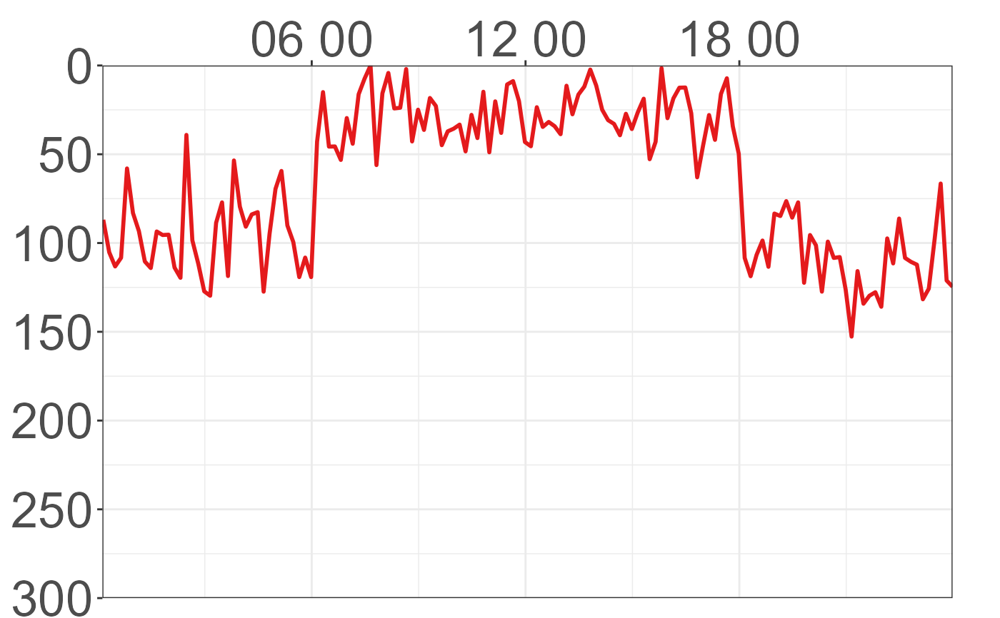
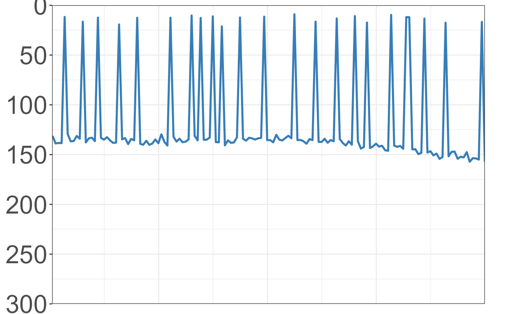
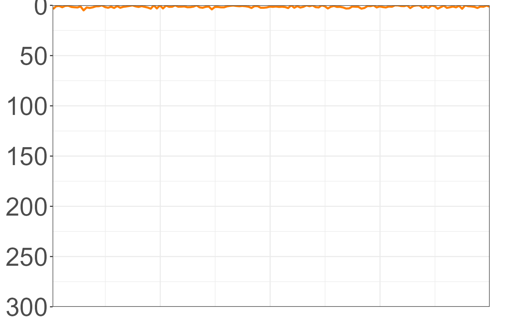
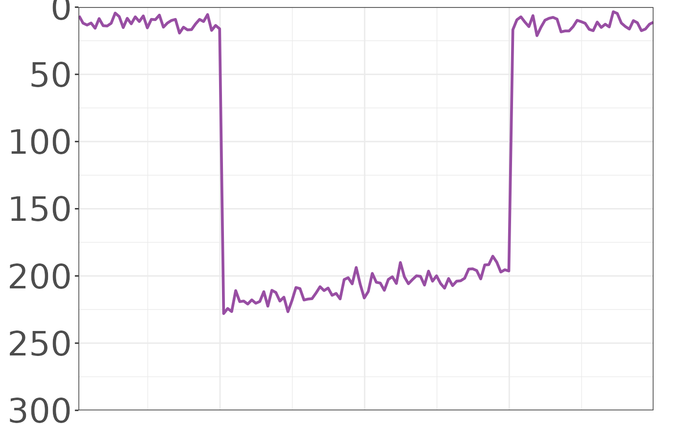

Plot the time-series depth records of the days closest to the centre of each cluster
Source:R/10_plot_clusters.R
plot_clusters.Rdplot_clusters plots the time-depth records of the days closest to the
centre of each of the clusters. Each cluster is plotted both individually,
and faceted together, with both a fixed y-axis and a free y-axis (depth).
Usage
plot_clusters(
tag_vector = tag_list,
data_folder = NULL,
kmeans_result,
No_days = 1,
every_nth = 10,
every_s = 0,
Y_lim = c(0, 250, 50),
color = TRUE,
diel_shade = FALSE,
dpi = 300,
output = FALSE,
output_folder = NULL,
verbose = FALSE
)Arguments
- tag_vector
A character vector of tag IDs. E.g. 'c("123456", "456283", "AB98XJ").
- data_folder
Parent folder path with separate folders for each tag data. E.g. "C:/Tag data". Defaults to 'data_dir'
- kmeans_result
An object of class 'kmeans' containing the k-means clustering data. Output of 'k_clustering()' function.
- No_days
Numerical. Number of days of each cluster to plot. Defaults to 1.
- every_nth
Numerical. Optional down-sampling of data points to plot. Defaults to 10, plotting every 10th record.
- every_s
Numerical. Alternative to every_nth. Optional down-sampling of data points to plot by number of seconds, as opposed to records. E.g. plots every 60th second, rather than 10th row of data. Must be a multiple of the sampling frequency. Overrides every_nth if != 0.
- Y_lim
Character vector with minimum depth, maximum depth, and sequence for ticks on Y-axis. Must be numeric, positive and 3 elements long. E.g. c(0,1500,100).
- color
TRUE or FALSE. Output clusters coloured by cluster assignment. Defaults to TRUE.
- diel_shade
TRUE or FALSE. Output plot with night-time shading. Can be slow! Defaults to FALSE.
- dpi
Numerical. DPI to use for 'ggsave()' output. E.g, 600
- output
Logical. If TRUE, output is saved to
output_folder. Defaults to FALSE.- output_folder
Output folder path. If
output = TRUE,output_foldermust be provided. Defaults to NULL.- verbose
Logical. If TRUE, progress messages are shown. Defaults to FALSE.
Value
A plot list of all plots created of each cluster in the data. When output == TRUE this prints to file one figure for each Cluster with a fixed y-axis. Additionally outputs a facet plot of all clusters, and a free y-axis version of all plots.
Examples
# Set file path
filepath <- system.file("extdata", package = "FishDiveR")
# Load kmeans_result
kmeans_result <- readRDS(file.path(filepath, "data/5_k-means/kmeans_result.rds"))
# Run plot_clusters function
plot_clusters(
tag_vector = "data",
data_folder = filepath,
kmeans_result = kmeans_result,
No_days = 1,
every_nth = 10,
every_s = 0,
Y_lim = c(0, 300, 50),
color = TRUE,
diel_shade = FALSE,
dpi = 100,
output = TRUE,
output_folder = tempdir(),
verbose = TRUE
)
#> Maximum depth is 262.2
#> Data sampling interval is 60 seconds
#> Plotting every 10 records
#> Cluster 1 dates 2000-01-08 Tag: data
#> Cluster 2 dates 2000-01-10 Tag: data
#> Cluster 3 dates 2000-01-03 Tag: data
#> Cluster 4 dates 2000-01-04 Tag: data
#> Output folder: /tmp/RtmpQyI9qK/data/6_Cluster-plots.K=4
#> [[1]]

#>
#> [[2]]

#>
#> [[3]]

#>
#> [[4]]

#>